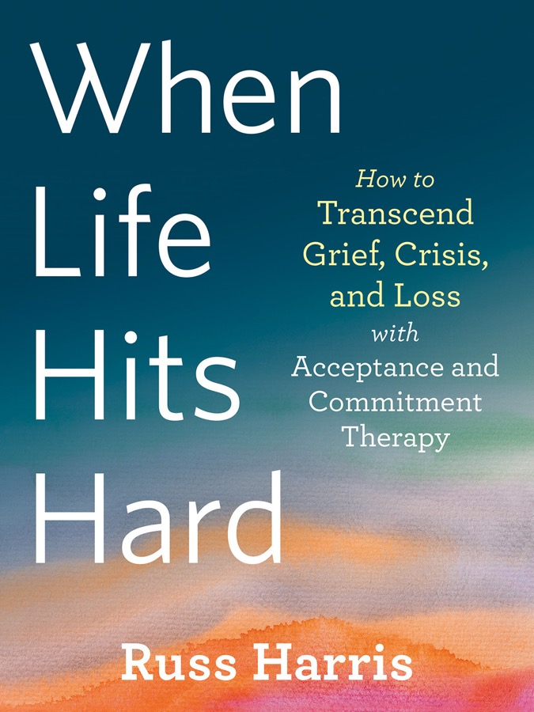

How to Transcend Grief, Crisis, and Loss with Acceptance and Commitment Therapy
Russ Harris

A doctor turned ACT therapist, author of The Happiness Trap, and survivor of his own losses: childhood abuse by two relatives, both parents' deaths, a divorce, chronic pain, and four years of his young son's treatment for a very serious illness (he recovered). The book mirrors the program he wrote in 2015 for the World Health Organization to use in refugee camps. It is a toolbox, not a theory: first regroup, then rebuild, then revitalize. Published in the UK and Australia as The Reality Slap.
Grief, Harris says, is a process of reacting to significant loss, and it brings everything from sadness and guilt to insomnia and apathy. Kübler-Ross's five stages (denial, anger, bargaining, depression, acceptance) are real but blur, repeat and come in any order. Underneath sits the old fight / flight / freeze system: anger, anxiety, or numbness and shutdown. Two rules he repeats throughout: there's no right way to react, and no single right way to cope. Experiment, and drop what doesn't work.
1 · RegroupLook after yourself and handle the storm of thoughts and feelings. Chapters 1–12.
2 · RebuildValues, small steps, the challenge formula, resentment, habits. Chapters 13–18.
3 · RevitalizeAppreciate what is still here; joy and sorrow. Chapters 19–21.
First things first: focus on what's in your control
You can't control the past, the future, other people, or your feelings. You can control what you do with your arms, legs and mouth. So:
Don't isolate
Reach out, with limits if you need them: "I can only chat for five minutes," "I don't want to talk, just hold me." People will offer platitudes ("everything happens for a reason," "God only gives us what we can handle"); it isn't their fault, nobody taught them.
Small self-care counts
Rest, but not weeks on the couch. Comfort food and alcohol, but in moderation. Keep the body moving within your limits. Brushing your teeth is self-care. Go outside: "you don't have to put on a brave face for the grass."
Postpone big decisions
Or delegate them. If you can't, drop anchor first.
You don't have to express feelings
Talking or journaling helps many people but isn't essential. Try it; keep it if it helps.
Regroup · tool 1 (ch. 3)
Kind words
Antonio, a burly police officer whose baby daughter Sophia had died of SIDS, was drinking eight beers a night in front of the TV and shutting out his wife. To the idea of self-compassion he growled: "Don't give me that hippy shit!" Harris asked: on a dangerous journey, would you want a friend who says "stop whining, suck it up," or one who says "this is really shit, but I've got your back"? Then: which friend are you being to yourself?
Self-compassion in six words: acknowledge your pain, respond with kindness.
It isn't self-pity (wallowing), weakness, selfishness or positive thinking. It's putting on your own oxygen mask. Build your phrase:
The real phrases from the book: Rada said "This really hurts. Be kind." Natalie, whose son was killed by a hit-and-run driver, said "I'm noticing heartbreak. May I treat myself kindly." Antonio settled on "Here is… Go easy on yourself." Say it slowly, in a calm, kind inner voice.
Regroup · tool 2 (ch. 4–5)
Drop the struggle, drop anchor
We were taught two ways to handle feelings: control them or be controlled by them. Distraction, positive thinking, chocolate, alcohol, exercise, comparing ourselves with people worse off: all work briefly, and any of them used rigidly costs us. Feelings are like weather. Experiment: hold this page at arm's length and push it away hard for a minute; that's emotional control. Now let it rest on your lap and look around; that's dropping the struggle.
When an emotional storm hits, a boat drops anchor. The anchor doesn't stop the storm; it holds the boat steady until the storm passes. Harris's formula is ACE. Do three or four slow cycles:
ACE
Aims: more control over your actions, less pull from the feelings, an interruption of rumination, and a return to what you're doing. Not to make the feelings go away. When it works, that's a bonus. Ali, a refugee tortured in prison and plagued by flashbacks, was asked to drop anchor 20–30 times a day.
Regroup · tools 3–5 (ch. 6–10)
Smog, names and a curious look
Psychological smog
The mind is a problem-solving machine bred to spot danger. Worrying, ruminating, self-criticism, hopelessness, even suicidal thoughts are its misguided attempts to help, like an overhelpful friend. Fighting thoughts never works: "Find the man who claims he has eliminated all negative thoughts… that's not him!" (Thoughts can't be deleted; learning a positive language doesn't make you forget the old one.) Ask not "is it true?" but "is it helpful?"
Notice and name
"I'm having the thought that I'm useless." Name the pattern ("here's worrying," "here's blaming") or the whole story: The Life's Over Story, The Bad Mother Story. Naomi, a psychologist with an incurable brain tumour, named hers The Scary Death Story and could stay present for the rest of the workshop. Then, playfully: "Thanks, mind, I've got this." Appendix A has more: sing the thought to "Happy Birthday," say it in a cartoon voice, put it in a thought bubble or on leaves on a stream.
Let it be
Hold your breath as long as you can, then let it go and notice the relief. "Let it go" doesn't mean make it disappear; it means loosen your grip, let it be. When resentment or blame grips you: name it, breathe in, hold for three, exhale slowly.
Emotions are allies
They communicate (sadness: I've lost something), motivate (from Latin movere; sadness says rest) and illuminate what matters. Cut yourself off and you lose vitality and wisdom: "Mr Duffy lived a short distance from his body" (Joyce). Like a class without a teacher, unwatched feelings riot.
The blue-ringed octopus
Grab it, chase it, or ignore it, and it bites. Watch it with a marine biologist's curiosity, and it drifts away. Do the same with a feeling: notice where it is, its shape, temperature, colour; name it; breathe into it and make room; allow it (it shows you have a heart); expand your awareness to everything else around it. Start small, like a trainee firefighter.
A kind hand
Combine it all: pause, open up, place a hand on your heart or where it hurts "as if holding a crying baby," and speak kindly. Antonio sobbed for ten minutes, then said: "I've been trying so hard not to feel that." Harris's own test is when he yells at his son: beneath the guilt he finds love. "If you didn't care, you wouldn't hurt."
When memories hurt (ch. 12)
Grieving practices: a regular time and place, a strong reminder (photo, clothing), a symbolic act (a candle, flowers, music, prayer), remembering and allowing, choosing which memories to savour, even talking to the person. Natalie visited the grave twice a week and lit a candle in her son's room every night, holding his clothes under her hands. Antonio and Cathy stood at Sophia's crib once a week. Giving support: in imagination, travel to just after the bad event (never into it alone; that needs a trained therapist) and comfort your past self. Practise first on a much older memory.
Rebuild (ch. 13–14)
What will you bring to the table?
Life has swept good dishes off the table and put painful ones on it. You can't take them away, but you can add to the table. Values are how you want to behave; goals are what you want to get. "To be loved" is a goal; "to be loving" is a value you can live now, even if the goal never comes. One wall, one brick at a time: each week pick one domain and two or three values, then "flavour" your activities with them and "savour" the difference.
This week's domain
I'd like to behave in ways that are… (pick 2–3 of Harris's 40)
How the clients did it
Antonio, family, with kindness, understanding and openness: cut to two beers, listened, held Cathy when she cried, took evening walks talking honestly about their grief.
Shanti (husband left with her best friend), family and friends, with courage, honesty and self-protection: reconnected one by one, and limited time with her mother, who blamed her for the affair.
Dave (lost his job), work, with patience, persistence and responsibility: eight hours a day of job search or learning, repeating his values each morning like a mantra.
Natalie: her last words to her son were "selfish and lazy." Her mind's Bad Mother Story was trying to help: it pointed to the values of love, kindness and forgiveness, which she could still live with her husband, daughter and friends. She chose self-care and drank protein shakes.
Rada (fibromyalgia) could no longer sculpt or dance. The values underneath (creativity, persistence, openness to mistakes) went into ultra-slow "dance" physiotherapy and pencil drawing.
Other exercises: "How's my mind trying to help?" (mine the self-criticism for values); "Connect and Reflect" (relive a good moment with someone, then ask what qualities you showed); "Six months from now, what did I stand for?"
Rebuild (ch. 15–18)
The challenge formula and its companions
In any hard situation you always have two or three options:
1 · LeaveNot always possible (prison, illness, a refugee camp), but seriously consider it for a toxic relationship or job.
2 · Stay and live by your valuesImprove what you can, make room for the pain, hold yourself kindly.
3 · Stay and make it worseDrinking, withdrawing, fighting. It comes naturally, and it brings short relief and long-term cost.
His example is Nelson Mandela: he couldn't leave Robben Island, so he chose option 2, turning the lime quarry into "Mandela University." In 1985 he even refused release on the condition of silence. In the refugee camps, option 2 means how you treat the people in your tent. Take your stand with willingness: you have to pay for the cinema ticket either way, but paying willingly feels different. Watch for "should / must / have to"; those turn values into draining rules.
The prison of resentment
"Like grasping a red-hot coal to throw it at someone." Resentment comes from re-sentir, to feel again. ACT forgiveness = for-give: give yourself back what life was like before the resentment. It isn't forgetting or excusing, and nothing has to be said to the other person. Four steps: drop anchor, unhook, hold yourself kindly, take a stand. Michael, a Vietnam veteran who drank because he had killed people, couldn't make amends to the dead, but he could contribute to the living: AA, then volunteering for homeless people and refugees.
It's never too late
Harris's father, a doctor, never let him say what he meant to him, through lung cancer, heart surgery and a year in hospital ("Hush now. And wipe away those tears"). Days from death, in a lucid moment, he took his son's hands, listened, and said: "Thank you. I love you too." One small change, staying present and open, made a memory for life. "Little by little does the trick."
Breaking a bad habit: six questions
What am I doing? Be specific: "eight beers a night," not "drinking too much."
What triggers it? Antonio: coming home, a tight chest, "here we go again."
What are the payoffs? Escaping feelings, relaxing.
What are the costs? Health, his marriage, sleep, grumpiness at work, guilt.
What's the alternative? Two beers, slowly, then herbal tea.
What skills can I use? Three minutes in the car before going inside: anchor, unhook, values, make room for the urge.
Expect relapses. Harris quit heavy drinking but still loses fights with chocolate and ice cream. Plan ahead what you'll do when you slip, and loosen your grip on The Do It Perfectly Story. Appendix C turns this into SMART goals: specific, motivated by values, adaptive, realistic, time-framed.
Revitalize (ch. 19–21)
Light up the whole stage
Your life is a stage show; the "observing self" is the lighting crew. Grief throws a spotlight on the pain and darkens everything else. The aim isn't to deny the pain but to bring up the lights on the whole stage. Mandela savoured the sea breeze on the march to the quarry, Primo Levi the spring sun in Auschwitz, Frankl memories of his wife. Exercises: notice five things you can see; play with this book and appreciate your hands; breathe and think of those who can't; listen to the layers of sounds. Lisa, kept awake by a neighbour's frogs, learned to listen to them like music and fell asleep to them. Each day, take in one person as if you'd never seen them, and savour one ordinary pleasure.
Joy and sorrow
Harris pushes back against positivity: a cancer support group told his client Chloe to see her cancer as a "gift." Call your child's death or a rape a gift, he says, and it's callous. Acknowledge the pain first, be kind, act; only then ask: How can I learn or grow? What strengths, skills or relationships could I develop?
The red button
Press it and all fear, grief and guilt disappear forever. The only side effect: you'll never care about anyone or anything again. Would you press it? "Those things that truly matter also hurt." He calls appreciating your pain, not just tolerating or accepting it, the hardest challenge in the book.
"The deeper that sorrow carves into your being, the more joy you can contain." Kahlil Gibran, "On Joy and Sorrow," quoted to close the book
Keep
Pocket version
Drop anchor many times a day: Acknowledge · Connect · Engage.
Acknowledge pain, respond with kindness: your own phrase, a hand on your heart.
Name it to tame it: "I'm having the thought that…" "Here's The ___ Story." "Thanks, mind."
Make room: observe, breathe in, allow, expand. Feelings are allies, not octopuses.
One domain, two or three values a week: flavour and savour.
Leave, or stay and live your values, willingly, not out of "must."
Forgive = give yourself back your life before the resentment.